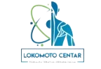
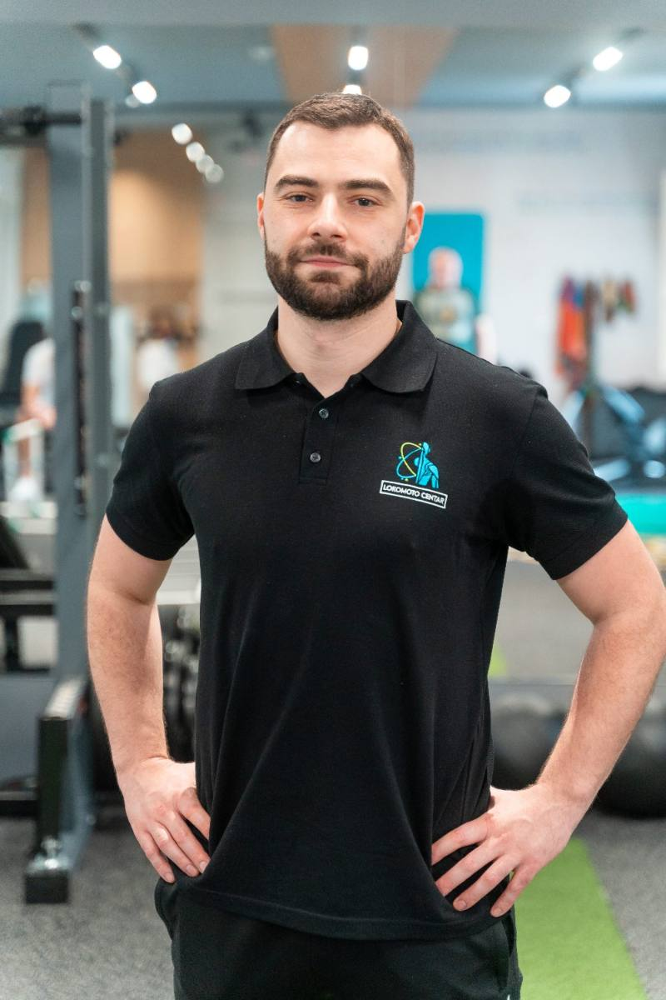

Rezerviši mestoDvodnevna praktična edukacija za fizioterapeute, fizijatre i trenere
Nauči kako da povežeš kliničku procenu, donošenje odluka i terapiju kroz sistem koji možeš da primeniš već sa prvim narednim pacijentom.
Predaje Novak Ilić, fizioterapeut sa preko 15 godina prakse i osnivač Lokomoto Centra.
Problem i razlika
Većina terapeuta poznaje anatomiju, vežbe i različite tehnike. Pravi izazov nastaje kada treba doneti odluku: šta je najbolji sledeći korak za konkretnog pacijenta.
Šta pacijent trenutno može da podnese
Diferencijalna dijagnoza koja sužava izbor
Izbor i doziranje prema nalazu
Prelazak faza po kriterijumima
Razlika je kao između nekoga ko ima recept i nekoga ko ume da kuva. Sistem primenjuješ i na slučaj koji nikada nisi video.
Svaka faza ima uslove za ulazak i izlazak. Zapisuješ ih i pratiš, pa znaš kada je pacijent zaista spreman za više.
Od prvog pregleda do povratka treningu. Većina kurseva pokrije početak, pa te ostavi na pola.
Pasivne tehnike ostaju alat za pripremu, ne sadržaj tretmana. Pacijent koji izađe samo opušteniji vraća se za mesec dana.
„Vežba nije rešenje. Vežba je alat.”
Materijali
Materijal je napravljen da se koristi, ne da stoji u fioci. Sve što dobiješ već si probao na kursu.
Šta testiraš, kako, i šta ti nalaz menja u planu.
Formular koji popunjavaš od prvog pacijenta.
Za najčešća stanja leđa i kuka, sa tim šta raditi a šta ne.
Kroz sve tri faze rehabilitacije, sa objektivnim kriterijumima.
Kompletan materijal sa kursa, u štampanom obliku.
WhatsApp grupa gde pitaš za slučajeve iz svoje prakse.
A pre svega: red u glavi kad ti sledeći pacijent uđe u ordinaciju.
Rezerviši svoje mestoProgram
Dva dana, mala grupa, veći deo vremena na nogama. Testove i vežbe radiš sam, u parovima, dok Novak gleda i ispravlja na licu mesta.

Predavač
Fizioterapeut sa preko 15 godina prakse i osnivač Lokomoto Centra u Beogradu.
Sistem koji predaje nije prepisan iz knjige. Nastao je iz svakodnevnog rada sa pacijentima sa bolom u leđima, od akutnih slučajeva do sportista koji se vraćaju punom opterećenju.
Kliničkog iskustva u rehabilitaciji
Osteopatija, DNS, NKT, SonoSkills
Ustanova kroz koju prolaze stotine pacijenata
Pitanja
Ovde ne dobijaš nove tehnike. Dobijaš okvir koji povezuje ono što već znaš u redosled odluka — kada koju tehniku koristiš i po čemu znaš da je vreme za sledeći korak.
Grupa je namerno mešovita. Mlađi dobijaju strukturu na početku karijere, iskusniji red u onome što već rade. Rad u parovima je tako i postavljen.
Kurs pokriva ceo put, uključujući povratak punom opterećenju i sportu. Drugi dan se dobrim delom bavi progresijom do treninga.
Odlaziš sa gotovim obrascima i kriterijumima, i sa tim materijalom uvežbavaš na kursu, ne tek kod kuće.
Teorije ima onoliko koliko objašnjava odluku koju donosiš. Veći deo oba dana je praktičan rad.
Dobijaš potvrdu o prisustvu. Ne boduje se i nije zvanični sertifikat — kurs ne zamenjuje formalno obrazovanje ni licencu.
Prijava
Grupa je 20 ljudi zato što drugačije ne stižemo da ispravljamo svakoga tokom vežbi.
Standardi i vremena zadržavanja iz ovog sistema su klinički standard ove metodologije, koji omogućava uporedivost merenja. Nisu validirane norme iz literature. Kurs ne zamenjuje formalno obrazovanje ni licencu.
Javljamo se sa instrukcijama za uplatu u roku od 24 sata.
Prijava poslata. Javljamo se na email.